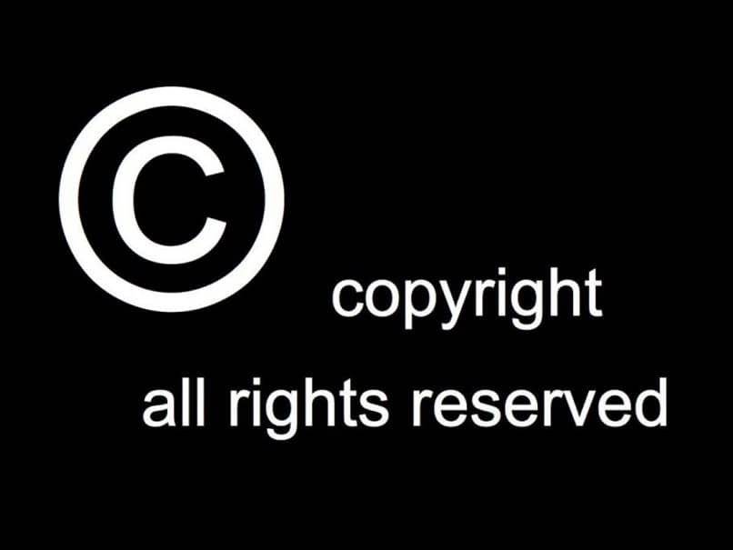

- Derechos de autor y copyright
- Conceptos de derechos de autor y copyright
Los derechos de autor o copyright son una modalidad de protección del conocimiento científico. En concreto, describen los derechos de los creadores sobre sus obras literarias, artísticas o científicas, tanto derechos patrimoniales como morales.
Las características más importantes de esta modalidad de propiedad intelectual son:
- Objeto protegido: obras originales literarias, artísticas o científicas (incluidos programas de ordenador y bases de datos). La protección del Derecho de Autor abarca únicamente las expresiones, no lasideas, métodos ni conceptos.
- Tipo de protección: proporciona al creador original de la obra y a sus herederos capacidad legal para detentar el derecho exclusivo a utilizar o autorizar a terceros la utilización de la obra en condiciones convenidas de común acuerdo, vender los derechos sobre sus obras a terceras partes si así lo considera, y reivindicar la autoría de la obra y el derecho a oponerse a modificaciones de la misma que puedan atentar contra la reputación del creador
- Duración: toda la vida del autor más 70 años después de su muerte. No obstante, cada legislación nacional puede fijar plazos de protección más largos.
- Tipo: No es necesario el registro. La protección surge automáticamente al hecho de creación de la obra, conforme al Convenio de Berna.
- Organismo Competente: la mayoría de países cuenta con un sistema de registro y depósito facultativo de obras, aunque su registro es voluntario.
¿Cuándo pasa una obra a ser de dominio público?
Según la actual normativa española, los derechos de explotación de una obra subsisten 70 años después de la muerte del autor y se computan desde el 1 de enero del año siguiente al de la muerte o declaración de su fallecimiento.